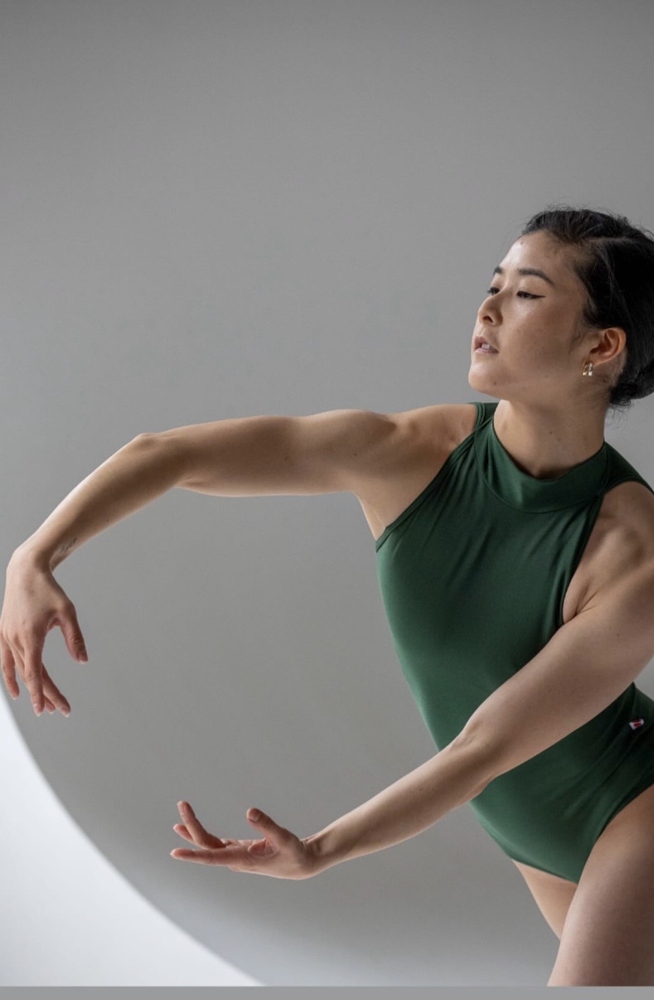

Hannah Jew
周健倫
A multi-hyphenate artist moving between ballet, Broadway, and heritage, telling stories that don't fit in one box.
Hannah Jew 周健倫 is a New York City-based dancer, choreographer, and educator. From the national tour of The King and I to world premieres at the Smithsonian, from pointe shoes to traditional Chinese ribbons and fans, her work lives where classical rigor meets cultural storytelling.
More about Hannah

On Instagram
Latest from @hannahjew
Instagram embeds are shy sometimes. Head over to the profile for the latest rehearsal clips, show announcements, and behind-the-scenes.
Follow @hannahjew